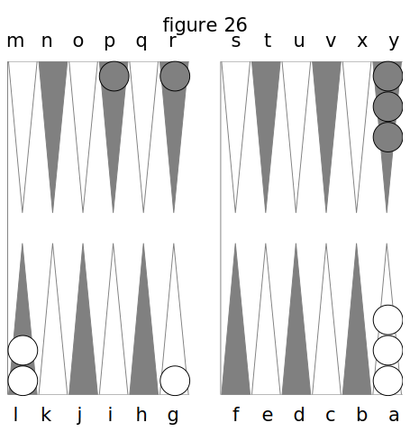
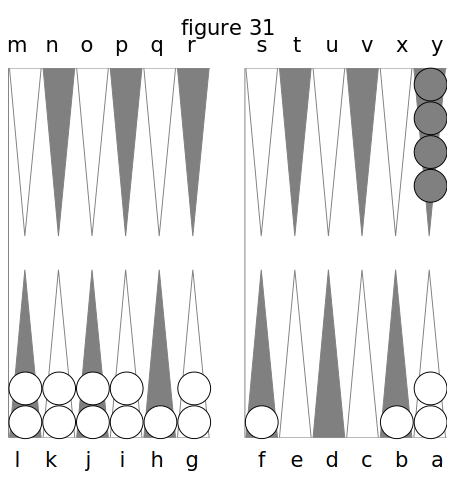
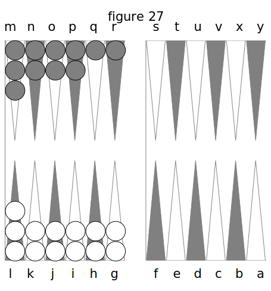

QUATRIÈME PARTIE. DES RÈGLES DU JEU.
Je vais tâcher d’établir ici l’énumération la plus complète des règles du Trictrac qui ait jamais paru, afin que, formant un corps de doctrine, cela puisse servir de manuel, et que l’on puisse consulter mon livre pour lever toutes les difficultés. J’ai consulté les meilleurs joueurs, et c’est d’après leur avis, plus que d’après le mien, que j’ai ajouté les règles dont les auteurs qui ont écrit avant moi n’ont pas parlé. Je me flatte que cette partie-ci ne laissera rien à désirer sous ce rapport.
J’établirai d’abord les règles dans toute leur rigueur telles que l’exige le jeu joué dans toute sa sévérité, afin que les joueurs, qui font des parties importantes et qui jouent gros jeu, puissent y trouver les solutions qu’ils désirent. J’avouerai pourtant qu’il me répugne d’indiquer des règles aussi acerbes, et par-là de devenir l’oracle et l’autorité de ces chicaneurs qui ne font grâce de rien, ou de ces joueurs avides et âpres qui ne pardonnent pas la plus petite faute, parce que, jouant pour gagner, ils ont compté d’avance sur les bévues de la victime qui est venue se jeter dans leurs filets; mais je n’ai pu me dispenser de celte tâche, quelque pénible qu’elle soit; et, pour m’en dédommager, j’indiquerai à la fin celles des règles qu’on ne suit point dans la bonne compagnie.
I. Des règles dans toute leur rigueur.
- Si l’un des dés sort du cornet après l’autre, le coup n’est pas bon.
- Lorsqu’un des deux dés pirouette, on n’a pas le droit de l’arrêter avec le cornet : il faut attendre qu’il se déclare de lui-même. La raison en est qu’en finissant de pirouetter, il arrive quelque fois qu’il change le dé déjà connu. Cependant, s’il était à une trop grande distance de l’autre, le joueur qui l’aurait lancé pourrait l’écraser; mais son adversaire n’en a pas le droit.
- Si un dé retombe sur l’autre de manière à le couvrir, le coup est nul.
- Si l’un des dés est dans une région du Trictrac et le second dans l’autre, le coup est bon.
- Un dé qui tombe entre deux dames, étant appuyé sur un angle ne vaut rien.
- Les dés sont bons soit qu’ils tombent sur les dames ou sur l’argent, ou sur les jetons, pourvu qu’ils nesoientpas soutenus par la bande, ce qui se vérifie ainsi : votre adversaire tire doucement la dame, et si le dé s’y tient sans tomber, il est bon.
- Si vos dés touchent les dames de votre adversaire, le coup n’est pas moins bon que s’ils eussent touché la bande.
- Si l’un des deux dés se casse, la partie qui laisse voir les plus gros points compte comme si c’était le dé entier.
- Si, par la force du mouvement de projection, les dés, lancés hors du Trictrac, vont toucher la muraille, et qu’après cela ils retombent dedans, sans y avoir été renvoyés par le mouvement volontaire des personnes qu’ils ont touchées,ils sont bons.
- Le dé qui retombe sur la bande n’est pas bon.
- Le dé qui va se cacher derrière une pile est bon.
- Si vos dés n’ont point touché la bande ni les dames, après que vous les avez jetés, votre adversaire a bien le droit de vous faire rejouer le coup ; mais il peut le trouver bon s’il veut, et vous n’avez pas le droit de le recommencer.
- Si vous jetez vos dés sur la main de votre adversaire pendant qu’il place scs dames, le coup est bon j mais si, après qu’il a joué, il a encore la main ou dans le Trictrac ou sur ses bords, vous pouvez reprendre les dés qui l’ont touchée ou les laisser, à votre volonté. C’est à lui de ne pas mettre ses mains sur le tablier du jeu lorsqu’il n’y a plus que faire.
- Si vous lancez vos dés avant que votre adversaire ait joué, le coup est bonj et il peut jouer d’après vos dés ainsi connus d’avance. C’est à vous à ne pas tant vous précipiter.
- On ne doit point regarder dans son cornet quand on y a mis les dés.
- On a droit de rompre le dé de son adversaire, lorsqu’on craint qu’il n’en amène un trop beau. Rompre, c’est renvoyer les dés de son adversaire avec le côté de son cornet, ce qui rend le coup nul ; mais il faut dire, je romps, et porter son cornet au devant. On ne peut pas rompre plus de trois fois de suite.
- Dame touchée, dame jouée, c’est de rigueur au Trictrac, comme aux Dames et aux Échecs.
- On peut toucher pourtant une ou plusieurs des dames qui sont sur les flèches ; mais il faut auparavant avoir dit : j’adoube.
- Il n’est pas même permis de toucher les dames du talon sans dire de même : j’adoube.
- On ne doitpas dire : j’adoube tout ; c’est un abus introduit parles joueurs sans principes, car, en adoubant tout, on éluderait à chaque instant la règle sévère, qui défend de toucher sans jouer.
- Lorsque vous avez pris une dame pour l'autre, vous êtes obligé de jouer celle dame, encore qu’elle n’aille pas sur la lièche où vous voulez caser ou couvrir.
- Dame abandonnée, dame jouée. Ainsi, si vous avez joué une de vos dames au-delà de la flècbe du nombre où elle doit être placée, on peut vous la faire jouer tout d’une par les deux nombres que vous avez amenés.
- Si vous failes une fausse case, c’est-à-dire si vous jouez deux dames sur une flècbe où le dé ne vous permet pas de les placer, votre adversaire a le droit de vous les faire jouer toutes les deux à sa fantaisie, et selon ce qui lui est plus avantageux.
- Si après avoir fait une fan sse case, ou joué inexactement, vous voulez jouer exactement, vous ne le pouvez plus. Votre adversaire a le droit de trouver bien joué ce que vous avez joué.
- Si, croyant avoir un trou, vous vous en allez, et que vous leviez vos dames pour les remettre au talon ou à la pile (ces deux mots sont synonymes), votre adversaire a le droit de vous mettre à l’école, et, en même temps, de vous faire jouer les dames que vous avez levées, si elles peuvent se jouer par les dés que vous avez faits.
- Lorsque l’on prend, pour faire le coin, deux dames qui n’y vont pas, et qu’une des deux ou les deux ne peuvent se jouer ni dans son jeu ni dans celui de son adversaire, on en peut jouer une, ou l’on joue deux autres dames; mais on ne péut prendre son coin sur le coup; g'est la punition.
- Lorsque vous ayez fait une fausse case, ou joué une de vos deux dames plus loin que ne devrait l’être la véritable, votre adversaire a le droit, ou de vous les faire jouer toutes deux, d’après les dés amenés, ou de ne vous en faire jouer qu’une seule tout d’une.
- Lorsque vous recommencez un relevé, vous ne devez pas garder une dame dans vos mains, pour le coup suivant, parce que vous perdriez par-lè le droit de marquer des points et vous seriez à l’école.
- Vous ne pouvez, ayant abandonné une dame sur une fiècbe qui ne répond pas à l’un des nombres que vous avez faits, l’avancer sur la llècbe qui répond à l’autre nombre. Vous êtes forcé de jouer une autre dame pour celui-ci. Ainsi, si amenant 6 et 4, Vous avez joué une dame pour le 4, vous ne pouvez la jouer ensuite pour le 6 et en prendre une autre pour le 4.
- Lorsqu’on a touché des dames qu’oji ne peut pas jouer, il n’y a pas de faute et l’on joue celles que l’on veut.
- Si vous arrangez mit votre jeu, et qu’une ou plusieurs de vos dames soient entre deux fléchés, de telle sorte qu’on ne sache pas à laquelle elle appartient, votre adversaire a le droit de la placer sur celle qui lui plaît. 32. Lorsqu’un joueur s’est aperçu avoir une ou plusieurs dames de moins, cela ne dérange rien à l’état du jeu, et on met au talon celle qui a été retrouvée.
- Lorsque l’on a joué avec une ou plusieurs dames de moins, les coups qui se sont passés, jusqu’au moment où l’on s’en est aperçu, n’en sont pas moins bons ; mais si l’on a joué avec seize dames ou plus, il faut recommencer la partie toute entière; parce qu’il n’y a rien qui puisse autoriser à profiter d’un avantage qui n’est pas dans les principes constitutifs du jeu.
- Si le joueur qui retrouve la dame qui lui manquait, a passé toutes ses dames dans son grand Jan, il met la dame retrouvée sur la flèche la moins éloignée du talon on il a déjàdes dames, à moins qu’il n’ait pas encore tenu par impuissance; et, s’il les a toutes passées dans le jeu de son adversaire, il la met sur la flèche de celui-ci la moins éloignée de son propre coin.
- On ne peut plus rectifier les fausses cases de son adversaire ni marquer ses écoles, quand on a lancé les dés.
- On peut toucher son bois quand on n’a pas jeté les dés, lors même qu’on n’aurait pas marqué les points qu’on a pour être battu à faux.
- On n’est pas obligé de dire qu’on s’en va quand on ne veut pas tenir : cela se manifest par l’enlèvement des dames ; mais on est forcé de rester, si l’on a dit qu’on restait, ou de s’en aller, si on a dit qu’on s’en allait.
- Vous ne pouvez passer une dame dans le petit Jan de votre adversaire, que lorsqu’il n’y peut plus faire de plein. Ainsi, vous ne pouvez, pour conserver, par suite d’un petit Jan, passer une de vos trois dames surnuméraires dans son petit Jan, si lui-même peut y faire le plein.
- Par conséquent, il ne peut, pour vous punir, vous y faire passer des dames que vous avez mal jouées dans votre jeu.
- On n’est pas obligé de passer une dame dans le petit Jan de son adversaire, pour conserver le sien, si l’on peut prendre son coin naturellement ou par puissance ; ce serait mal à propos qu’on forcerait dépasser une dame.
- Quand on a marqué les points qu’on a de reste, on est obligé de rester.
- Tant qu’on n’a pas touché ses dames, on peut toujours avancer son jeton pour marquer des points; mais on ne peut le reculer, et l’on est à l’école aussitôt qu’on a eu avancé ce même jeton.
- Une école n’est faite qu’autant que le jeton qui marque est abandonné et mis au talon.
- Vous n’avez pas le droit de mettre votre adversaire à l’école, parce qu’il ne vous y a pas mis lui même : on ne met point à Vécole de Vécole.
- Il y a école quand on oublie d’effacer ses points.
- Il n’y a pas d’école pour les points qu’on n’a pas effacés en s’en allant : l’un ou l’autre des joueurs doit ôter les jetons.
- Votre joueur a droit de vous forcer de marquer son école en entier, quand vous avez déjà marqué des points dessus. Une école n’est pas divisible, et vous n’avez pas le droit de ne marquer que les points que vous voulez.
- Si votre adversaire marque mal-à-propos des points et que vous ne l’ayez pas mis à l’école, il a le droit de conserver ces points, quoique marqués à tort, et cela parla raison qu’il encourrait la punition de l’école en marquant mal-à- propos.
- On ne peut plus, lorsqu’on a joué, prendre la bredouille qu’on avait oublié de marquer; de même qu’on ne peut plus l’ôter à son adversaire, si l’on a joué un second coup après le sien.
- Votre adversaire n’est pas obligé de s’effacer, et il peut garder les points que vous lui avez laissés lorsque vous avez joué un second coup. Cela est fondé sur ce qu’on ne iiniraitpas, si l’on voulait contester les points marqués, sous prétexte qu’ils ne l’ont pas été bien.
- Si l’un des joueurs a démarqué mal-à-propos des trous, ou s’il n’en a pas marqué assez, il ne peut plus les marquer de nouveau, après avoir joué.
- On ne peut mettre à l’école des trous : c’est-à-dire que si votre adversaire marque un trou au lieu de deux, vous ne pouvez marquer un trou d’école : s’il marque trop, vous le rectifiez simplement.
- On ne peut pas être à l’école des trous, en tant qu’on s’est trompé de trous en plus ou en moins; mais on est bien à l’école des trous lorsque par ces trous on a fait école de points. Par exemple, si vous marquiez un ou deux trous, croyant recevoir douze points ou les prendre, vous seriez bien à l’école d’un ou de deux trous, puisque vous ne pouvez marquer 12 points de trop ou de moins, sans marquer des trous avec le fichet, et non en points avec les jetons.
- L’école se base donc d’après les points que l’adversaire a marqués, tant avec son fichet qu’avec ses jetons. Par exemple, ayant 10 points vous croyez en avoir 14, et vous n’en avez que 12, vous marquez trois ou quatre trous; dans ce cas vous n’êtes à l’école que de 2 points, parce que les 12 points que vous prenez réellement font un ou deux trous sans bouger, et que le trou ou les deux de plus que vous marquez représentent la bredouille que vous croyez avoir, et non 12 autres points de trop. Vous avez 4 points, vous en prenez 2; et, croyant en avoir 10,vous marquez tm trou, et 2 points de reste ; dans ce ras votre adversaire vous fait rétrograder d’un trou, met voire jeton à 10, et vous envoie à l’école de 8.
- Il suit de-là que si votre adversaire, ayant 10 points, et croyant en prendre i4, lorsqu’il n’en prend que 12, marque trois ou quatre trous, lève ses dames et s’en va, non seulement il ne peut marquer qu’un ou deux trous au lieu de trois ou de quatre, mais encore il perd le droit de s’en aller par l’école qu’il fait. Ainsi, dans ce cas vous pouvez le mettre à l’école de 2 points, et pour ce le forcer de rester. Cette règle est dure, et paraîtrait même injuste si l’on ne réfléchissait qu’elle est établie pour prévenir la mauvaise foi.
- Par la raison qu’on ne peut envoyer à l'école de l'école, lors qu’en vous mettant à l’école, votre adversaire en fait une, vous ne pouvez pas l’y mettre lui-même, si l’école qu’il fait égale en points celle que vous avez faite, parce qu’il est réputé avoir marqué ses points au lieu de votre école, mais si l’école qu’il fait est supérieure en points à la votre, vous déduisez ce qu’il a marqué, et vous le mettez à l’école du reste. Par exemple, fig. 26, j’ai mon coin et une dame en G; vous avez une dame en P et une en R, et vous amenez 6 et 3. Vous ne vous apercevez pas quevous battez ma dame en G, qui vous donne 2 points, et vous jouez deux dames du talon. Je vous mets à l’école de 2 points, et je lance les dés sans m’apercevoir que vous battez les deux coins à faux ; mais vous ne pouvez dans ce cas me mettre à l’école que de 2 points, attendu que je ne suis obligé d’en marquer que 4 pour mon coin battu à faux, et que les 2 que j’ai sont à déduire sur les 4; bien que vous soyez convaincu que les 2 points que j’ai marques étaient pour votre école, parce que l’on ne met pas à l’école sur l’intention.
 - Vous n’êtes pas obligé de mettre votre adversaire à l’école pour les points qu’il marque mal-à-propos ; vous les effacez et cela suffit.
- Celui qui induit l’autre en erreur ne peut le mettre à l’école par suite de cette erreur ; mais celui qui est induit ne peut non plus revenir sur les points qu’il a marqués de moins.
- Au Trictrac à écrire, on doit prendre le pavillon avant que le trou qui suit celui où il a été acquis soit pris à l’un des joueurs : après ce trou on n’a plus le droit de le revendiquer.
- Si, ayant marqué les points du plein, on ne le fait pas, ou qu’on prenne des dames qui ne le font pas, on fait école. Mais Cette école est de deux espèces : dans la première, le joueur a marqué des points pour le plein et n’a pas rempli ; alors il est à l’école, d’abord des points qu’il a marqués, et ensuite de ceux qu’il devrait marquer pour le plein. Dans la deuxième il n’a rien marqué; or, il est tout simplement à l’école de ce qu’il aurait du marquer pour le plein.

Par exemple, fig. 31, vous amenez 4 et 2, quivous fait remplir de deux façons en couvrant la dame en H, au moyen de celle en F ou B ; vous marquez 8 points, et par méprise ou par oubli vous j ouez tout d’une du talon sur G ; moi, votre adversaire, je vous mets à l’école de 16 points : savoir, de 8 pour ceux que vous avez marqués, et de 8 pour ceux qui vous appartenaient; car, puisque vous ne remplissez pas, vous marquez des points mal-à-propos qui s’ajoutent à ceux qui vous reviendraient si vous eussiez bien joué. Si vous n’avez rien marqué, je vous mets simplement à l’école de 8 points. Cette école de deux cas présente une des plus extraordinaires difficultés qu’il y ait au Trictrac ; on aurait beau objecter qu’on ne peut pas être puni doublement: ce serait une objection frivole. Il n’y a qu’une raison à donner de celte règle : je serais la dupe de votre école, si je la laissais passer par inadvertance, et qu’amenant 6 et as, vous remplissiez de trois façons, votre école vous vaudrait 8 points de bénéfice. Or, il est absurde de ne pas proportionner les punitions aux avantages. Au surplus, dans tous les cas, l’adversaire a le droit, en marquant l’éçole, de faire jouer les dames qui pourraient remplir. - Vous pouvez mettre votre adversaire à l’école, s’il vous y a mis lui-même mal-à-propos: il a fait ce qu’on appelle une fausse école.
- On n’est pas obligé d’avertir des points que l’on marque en vous mettant à l’école : c’est à vous d’en chercher la raison. Cependant, cela ne doit pas passer deux coups, car il en résulterait ce qu’on appelle l’école perpétuelle.
- Lorsqu’on amène des dés qu’on ne peut jouer par impuissance, on ne peut être envoyé à l’école des points qu’ils produisent et que l’on a oublié de marquer.

Par exemple, fig. 27, vous amenez sonnez, qui vous fait tenir et battre deux dames Q R. Cependant, vous ne marquez que 8 points au lieu de 14. Votre adversaire est obligé de jouer sans pouvoir vous mettre à l’école, puisque vous n’avez pas pu jouer de dames. Il y a plus : vous êtes encore à temps de marquer vos 6 autres points avant de lancer votre second coup de dé, et quoique votre adversaire ait joué. C’est ce qu’on appelle l‘école impossible. - Il y a encore un autre genre d’école impossible, qui est assez bizarre. C’est lorsque votre adversaire, croyant prendre plus de points qu’il n’en prend réellement, marque un ou plusieurs trous, et sans toucher ses jetons ou ses dames, dit : je m’en vais. Vous qui voyez son école, vous ne pouvez prendre vos dames et vous en aller; vous ne pouvez non plus, dans vos intérêts, l’avertir de son erreur; s’il vous faut attendre qu’il relève ses dames, il peut revenir sur le coup; la situation est embarrassante et même pressante ; je ne vois point d’autre manière de lui faire consommer son école que de lui dire : Eh! bien, allez vous en, de l’air le plus indifférent possible. Alors, aussitôt qu’il a touché un (certain nombre de dames, vous l’arrêtez, et non- seulement le mettez à l’école, mais vous lui faites jouer celles de ses dames qu’il vous plaît, suivant que cela vous est le plus avantageux.
- Si, immédiatement après le coup où vous avez donné des points à votre adversaire, il joue sans les avoir marqués, et que par ce nouveau coup il prenne des points et vous en donne, vous ne pouvez tout à-la-fois le mettre à l’école des points qu’il n’a pas marqués et conserver la bredouille pour ceux qu’il vous donne ensuite en en prenant lui-même. Par exemple, vous avez fait une école de 4 points, je la marque ; le coup d’après, vous en prenez 4 en me battant à vrai, et vous m’en donnez 4 en me battant à faux ; j’ai donc 8 points en tout. Mais j’ai perdu la bredouille, que j’aurais prise, si je ne vous eusse pas mis précédemment à l’école; et il en résulte que votre école m’a été onéreuse, puisqu’elle m’a fait perdre la bredouille : tant pis pour moi. C’est à moi de voir si je dois vous mettre ou ne vous pas mettre à l’école, suivant le dé que vous amenez.
- Lorsque l’un des deux joueurs ne s’aperçoit pas qu’ii a déjà marqué des points et prend un autre jeton pour en marquer de nouveaux, l’autre joueur a le droit d’effacer les points marqués par le premier jeton, et de mettre son joueur à l’école du montant de ces anciens points, ou de lui faire marquer tous ses points. C’est L’école dite des deux jetons.
- Lorsque vous marquez des points avec le jeton de votre adversaire, il faut effacer le vôtre avaxxt de tirer le sien de votre côté, sans quoi vous tomberiez dans l’école des deux jetons.
- Si vous effacez mal-à-propos votre adversaire, ou que vous tiriez son jeton pour marquer vos points, en ne lui en laissant pas, vous êtes à l’école de tous les points dont vous l’avez privé.
- Si, étant au Jan de retour, vous ne vous apercevez pas que vous pouvez passer dans le jeu de votre adversaire, par les nombres que vous amenez, et que vous ne jouiez dans votre jeu qu’une dame par le plus petit de ces nombres, votre adversaire, s’il .le veut, a le droit de vous laisser comme vous avez joué, mais il est obligé de mai’quer 2 points pour la dame que vous ne jouez pas, sous peine d’être mis à l’école.
- Lorsqu’on a passé son coin au Jan de retour, on peut toujours le reprendre par puissance, si l’adversaire a le sien vide.
- On peut battre le coin évacué comme celui qui n’a pas encore été pris.
- Si par l’un des deux nombi’es que vous avez amenés, vous achevez de rentrer tomes vos dames dans le petit Jan de votre adversaire, vous pouvez, par l’autre nombre, lever une dame sur la bande, pour sortir.
- On peut toujours jouer sur la bande pour sortir, lors même que le plein est encore possible au Jan de retour : c’est à tort que quelques joueurs soutiennent le contraire.
- Le dernier coup qui se joue pour la sortie au Jan de retour ne sert pour le premier coup du relevé suivant, que quand on a dit : Je joue pour tout.
- On peut faire jouer d’avance a son joueur le dernier coup de la sortie, quoiqu’il ait encore plus de deux dames à sortir; mais on ne peut le forcer à jouer pour tout.
- Il n’est pas permis à un spectateur d’avertir un joueur qu’il joue avec une dame de moins.
- Lorsqu’on joue devant une galerie, si quelqu’un de ceux qui la composent se permet une indiscrétion, le joueur au détriment de qui elle est faite a le droit d’exiger de lui qu’il paye la partie perdue.
- Lorsqu’on regarde jouer, on ne doit témoigner aucun sentiment, soit par parole, soit par geste, encore moins faire des exclamations de surprise ou d’admiration sur la beauté ou la laideur des dés qui paraissent, parce que cela sert d’avertissement et nuit au joueur au profit de qui seraient les écoles que ces mouyeinens empêchent de faire. On doit regarder jouer au Trictrac, comme on assiste à l’audience d’un tribunal, sans rien manifester d’approbatif ou de désapprobatif.
II. Des règles modifiées pour la bonne compagnie.
Je dois indiquer ici des règles qui n’ont rien de commun avec le jeu considéré intrinsèquement, et qui tiennent au savoir vivre et au bon ton. Ce n’est pas assez de savoir bien le jeu, il faut encore observer, pour le jouer noblement, les égards qui ont du rapport aux personnes, et qui tiennent à cette politesse qui fait le charme de la société.
D’abord, lorsque l’on joue avec quelqu’un à qui l’on doit de la déférence, on lui laisse le choix du coté droit ou gauche du Trictrac; car il y a des personnes qui ne jouent que d’un côté. Cette concession est d’ailleurs indifférente, lorsqu’on a pris la bonne habitude de jouer dans les deux sens. On doit également laisser à cette personne le choix des dames de l’une ou l’autre couleur; selon que cela s’accommode mieux à sa vue.
C’est surtout avec le beau sexe que l’on doit avoir ces procédés, et il y a des hommes si ga- îans qu’ils sont attentifs, lorsqu’ils ont une adversaire quia la main jolie, à lui laisser les dames noires ou vertes, afin que la blancheur en ressorte mieux. Au contraire, ils lui font prendre adroitement les blanches, si sa main est laide, car ils craindraient de faire une galanterie ironique. Si ces délicatesses là ne sont pas nécessaires, on ne peut qu’applaudir à ceux qui les observent.
Il y a même des joueurs si galants, qu’ils perdent avec leurs joueuses. Beaucoup d’hommes sont ravis de trouver l’occasion de faire une partie de Trictrac avec une jolie femme, parce qu’ils espèrent lui faire leur cour en perdant. Ils se rappellent sans doute les conseils qu’Ovide donne à un amant de se laisser gagner par sa maîtresse.
Seu ludet numerosque manu jactabit eburnos ;
Tu malè jactato, tu male jacta dato, etc.D'un jeu de dés veut-elle aussi courir la chance ?
Qu’elle ait de vous gagner la riante assurance :
Faites de mauvais coups, sachez perdre avec art,
Et contre vous toujours dirigez le hasard.
Ceci n’est sûrement point une règle pour les joueurs et ne peut convenir qu’à ceux qui, tout-à-la-fois, sont très-amoureux et ont beaucoup d’argent. D’ailleurs, je ne travaille pas ici à un traité de l’art de plaire.
Mais pour revenir aux égards d’obligation, on doit prendre les dés et les lancer le premier, comme pour servir la personne avec qui l’on joue.
Un joueur qui a de l’éducation ne doit pas jouer avec colère, ni se fâcher quand le dé lui est contraire : rien n’est plus haïssable qu’un mauvais joueur dans un salon. 11 faut perdre avec résignation, avec calme, je dirai même avec grâce ; et si l’on gagne, il faut lâcher de ne point l’attribuer à son bien jouer, mais au dé, mais à la fortune, afin de ménager l’amour propre de son adversaire : car il n’y a pas de petites blessures d’amour propre, même en fait de Trictrac.
Je sais qu’il y a, à ce jeu là, ce qu’on appelle des veines si désastreuses qu’on en perd patience ; mais, avec un peu de raison et d’habj- tude, on se familiarise avec la mauvaise chance ; l’homme d’esprit, ou d’un caractère aimable, plaisante le premier sur son malheur ; il en est légèrement piqué, et il se console gaîment, loin, en cela, de ces joueurs dolens et moroses, qui font des jérémiades à chaque mauvais dé, qui tournent vers les spectateurs des regards plaintifs et qui déplorent lamentablement leur infortune. D’une séance de jeu ils font un drame lugubre., chaque partie est une élégie pour eux.
Autant vaudrait qu’ils allassent jouer dans les catacombes, ou au milieu des tombeaux dans le cimetière du Père Lachaise. J’avoue que celui qui joue gros jeu ne voit pas toujours de sang froid une suite de mauvais coups qui tendent à vider sa bourse et à le gêner pour long-temps; mais alors il a tu tort de s’y exposer ; il ne devait pas jouer des parties au-dessus de sa fortune: on ne peut plus s’amuser du moment qu’on met ses ressources pécuniaires en danger, et c’est une sottise inexcusable quo de jouer un jeu qui n’est pas en proportion avec ses moyens, dans une compagnie où l’on ne se réunit que pour l’agrément. Comme on ne fait dans les salons que des parties de loin en loin, qui ne laissent pas toujours l’espoir de prendre la revanche, on ne doit exposer qu’une somme assez légère pour ne pas en ressentir la perte, mais pourtant assez forte pour intéresser le jeu, car il n’y a rien de si fatigant que ces parties où ce que l’on gagne ne pourrait même pas être offert à un domestique. Ce sont des avares qui jouent de pareilles bribes, c’est ce qu’on appelle trivialement des jeux de tisanne, c’est-à-dire, pour la santé.
Ce qu’il faut éviter encore, lorsque l’on joue, c’est le bruit. On doit donc prendre garde de frapper du cornet sur les bords du Tricti'ac, et de remuer les dames d’une manière trop bruyante, même involontairement. Si c’est par colère, ce n’est pas excusable ; car, comme je viens de le dire, la colère est de mauvais ton au jeu, sans compter qu’elle est outrageante pour l’adversaire, qui croirait, avec raison, que vous êtes dans l’opinion que vous avez le droit de le gagner.
Il faut éviter aussi d’être silencieux et morne, pour ne pas avoir l’air de faire une affaire d’ctat d’un amusement. D’ailleurs, on paraît donner par là plus d’importance au jeu qu’à la personne avec qui l’on joue ; et si la plainte ou la colère est défendue, il n’y a rien, d’un autre côté, de triste comme cette froide et muette impassibilité qui est le comble de la monotonie, et qui donne une réputation d’insensibilité qui n’est pas plus avantageuse quecelle de mauvais joueur. L’homme qui ne vous témoigne point qu’il fait plus de cas de l’argent qu’il vous gagne, que de celui qu’il perd, vous déplaît autant que celui qui gagne avec joie, ou vous paye en rechignant.
Au surplus, le Trictrac a cela de propre que n’a aucun autre jeu connu, c’est qu’il offre des ressources incroyables. Au moment même où votre partie est le plus désespérée, et que vous la croyez perdue, un coup seul vous relève et vous la fait gagner. Il n’est pas rare de voir des parties où l’un des joueurs, étant venu à onze trous, sans que l’autre en ait un seul, perd néanmoins la partie. Or, je vous demande un peu, si celui-ci a tait des doléances, quelle contenance il doit faire, lorsque la chance a tourné! et s’il y a rien déplus ridicule que de s’être plaint long-temps,et de finir par gagner? S’il était permis de se désoler, ce ne devrait donc être qu’après la perte. C’est surtout au Trictrac qu’on peut appliquer, plus qu’à tout autre jeu, même celui de la vie humaine, laquelle n’est vraiment qu’un jeu, cette maxime de jene sais quel sage ougrand homme : qu’il ne faut jamais désespérer de la fortune. Que dire donc de ces joueurs qui se lamentent au premier trou qu’ils perdent, et qui, alarmistes burlesques, entrevoient dès-lors la perte de la partie, semblables à ces alarmistes politiques, qui voyent tout en noir, etcroyent déjà l’ennemi aux portes de leur ville, parce qu’il a eu le dessus dans une escarmouche? Ces pleureurs ressemblent à un certain Languille, de Melun, qui criait, dit-on, avant d’être écorché.
Mais sans m’étendre plus loin sur les règles de convenances qui sont en dehors du jeu, je reviendrai à celles qui lui sont inhérentes. Je dirai donc que les règles que j’ai établies dans le chapitre précédent sont susceptibles de modification, par rapport à la loyauté, à la noblesse et à la bienveillance du commerce de la vie, et des réunions de bonne compagnie.
Il faut pourtant admettre avant tout qu’il y a une certaine rigueur indispensable dans quelque société que ce soit, rigueur sans laquelle le jeu serait dépourvu d’intérêt, et qui, si l’on ne s’y astreignait, le dépouillerait de cette sévérité qui en fait le piquant et la beauté. Quels seraient les inconvéniens d’une indulgence trop étendue sur les régies du Trictrac? Si l’on pardonnait trop de choses à ce jeu, on ouvrirait la porte aux mauvaises habitudes, aux bévues, aux erreurs de toute espèce. Il est même de l’intérêt commun des deux joueurs de se passer le moins possible des fautes l’un à l’autre; car, si vous me passez une fausse case, je serai obligé de vous enpasserune autre; puis nous tâtonnerons toutes nos dames l’un et l’autre, nous les déplacerons, nous les replacerons ; enfin nous jouerons en enfants.
C’est bien pis encore, si vous me passez une école : je serai obligé de vous en passer une antre ; vous m’en passerez ensuite une qui sera plus forte. J’enchérirai encore sur vous; si je Vous fais une grâce, je vous en demanderai une ; vous m’en demanderez ensuite une autre encore plus forte, et tout deviendra arbitraire; et nous finirons par ne plus marquer d’écoles. Il n’y a pas de raison même pour que nous ne nous passions toutes les étourderies et toutes les bévues possibles, et que nous ne finissions par nous passer tout. Alors, nous aurons dénaturé le jeu de Trictrac, nous en aurons oublié jusqu’à la marche, nous en aurons anéanti la beauté qui consiste principalement dans la multiplicité de ses règles, ce qui l’a mis jusqu’ici hors de la portée du commun de la société, et lui a valu le titre honorable de jeu des honnêtes gens. Le relâchement en fait de jeu, comme en fait de morale, est donc nuisible; et, s’il faut s’abstenir d’une rigueur acerbe, il faut s’éloigner aussi d’une tolérance Sans bornes. Evitons lé Jansénisme au Trictrac, mais n’y mettons pas non plus d’indulgence jésuitique. Donc la rigueur à ce jeu est admise dans la bonne compagnie. Il ne s’agit alors que d’en fixer l’étendue et la limite, de manière à ce qu’elle s’accorde avec les procédés qui sont en usage dans cette classe de la société. C’est ce que je vais essayer de déterminer dans le chapitre suivant.
III. Des différentes modifications aux règles pour l'usage de la bonne société.
Les dispositions de la règle 2, sur le dé qui pirouette, sont trop minutieuses pour être admises. Qu’importe que le dé pirouettant puisse changer le dé connu ? Faut-il pour cela astreindre une personne vive à attendre patietnment que dé soit las de tourner ainsi sur un de ses axes, comme le sabot d’un petit polisson ?
La règle 12 doit se modifier ainsi :
Lorsque les dés lancés n’ont touché ni l'une des bandes ni les dames, le coup doit être recommencé du mouvement propre même de celui qui les a lancés : il ne doit pas attendre les observations de son adversaire là-dessus. ’
Règle 14. Vous ne devez pas profiter de la précipitation avec laquelle votre adversaire a lancé ses dés avant que vous n’ayez joué. Ne les regardez pas et laissez-le vous les cacher.
La règle 15 est de rigueur, et lorsqu’on joue avec quelqu’un qui regarde dans son cornet après y avoir mis les dés, on ne dit rien, et l’on se promet seulement de ne plus jouer avec lui.
On ne doit pas profiter de tout le bénéfice de la règle 16 : rompre plus d’une fois est une malhonnêteté.
On ne doit pas prendre à la rigueur la règle 17. Si l’on joue avec une femme surtout, il serait dur et peu galant de l’obliger à jouer la dame qu’elle aurait touchée. Il y a d’ailleurs des personnes qui, à ce jeu, ont la petite manie de tâter le bois qui est placé sur les flèches en remuant les doigts comme si elles préludaient sur les touches d’un piano.
La règle 19 n’est bonne qu’en academie.
De même de la règle 20.
De la règle 22 il faut retrancher ce qui regarde la dame placée au-delà du nombre pour lequel elle est jouée.
La règle 23 est trop acerbe.
Idem pour la règle 24.
La règle 25 doit se partager : il ne faut en admettre que le droit d’envoyer à l’école et rejeter celui de faire jouer les dames qui ont été relevées et qui pourraient être jouées.
La règle 26 n’est bonne qu’en académie.
Modifiez ainsi la règle 27 : Lorsque vous avez fait une fausse case, votre adversaire a droit de vous faire jouer les dames déplacées, sans vous désigner l’une plus que l’autre pour un des nombres amenés.
La règle 28 est inutile.
La règle 31 se convertit ainsi : Si une dame se trouve entre deux flèches, on la place sur celle où l’on croit qu’elle doive être ; si on ne le sait pas, on la place sur la flèche où elle est moins facile à être battue, soit à faux, soit à vrai.
La règle 32 donne lieu à une autre que je ne puis établir qu’ici : la loyauté et l’honnêteté exigent que l’on prévienne son adversaire qu’il a une ou plusieurs dames de moins, si l’on s’en aperçoit avant lui.
Règle 35. Votre adversaire ne doit pas se prévaloir de votre promptitude à lancer le dé pour n’être pas rectifié dans son casement ; il doit se rectifier lui-même, quoique les dés soient connus.
Il est de la politesse de ne pas suivre la règle 37 : on doit toujours dire distinctement qu’on s’en va.
La règle 42 est trop rigoureuse. Dans les bonnes maisons, on ne met son adversaire à l’école, que lorsqu’il a joué ses dames ou jeté les dés ; jusque-là on le laisse se rectifier, lors même qu’il a trop avancé son jeton.
La règle 48 doit être tout-à-fait proscrite comme contenant une disposition qui ne convient pas à des personnes bien élevées et loyales. On ne doit jamais garder des points mal acquis: il n’y a pas de raison de rigueur qui puisse autoriser à en conserver qu’on n’ait point faits. Ce serait une surprise indigne des honnêtes gens.
Sur la règle 49, je dirai comme le vieux proverbe : à tout bon compte revenir. On doit s’ôter la bredouille si on l’a perdue, et laisser son adversaire la prendre, lors même qu’il l’aurait oubliée.
La règle 50 est par trop favorable à la mauvaise foi, et je vais en établir une toute opposée : c’est qu’on doit s’empresser d’effacer ses points soi-même, et ne pas attendre que son adversaire le fasse.
La règle 51 est inadmissible : il n’y a pas de surprise, je le répète, entre personnes de bonne compagnie. Si votre adversaire a démarqué des trous ou s’il n’en a pas marqué assez, laissez-le les marquer s’il s’en aperçoit après avoir joué. Je ne dirai pourtant pas que vous devez l’en avertir, ce serait pousser la politesse trop loin.
La règle 59 est nulle. Lors même que votre adversaire aurait tout-à-fait oublié le pavillon, au moment de s’en aller, après avoir gagné le marqué s’il se le rappelle soudain, vous devez le lui reconnaître. Dirai-je plus encore? C’est que vous devez l’en prévenir Yous-même.
Il serait trop dur d’adopter la règle 60 ; laissez votre adversaire se rectifier.
La règle 62 doit encore être réduite de cette manière : Vous devez vous empresser d’expliquer à votre adversaire le motif pour lequel yous le mettez à l’école.
Règle 66. Lorsque votre adversaire marque avec deux jetons et qu’il a joué, vous pouvez ôter celui de ces jetons qui marque le moins de points ; mais vous ne le mettez point à l’école, L’école des deux jetons n’est point admise dans la société.
La règle 67 doit être regardée comme nulle.
Idem pour la règle 68.
La règle 69 est trop acerbe.
La règle 76 doit au contraire être tournée ainsi: Il est permis aux spectateurs d’avertir des dames qui manquent dans le jeu de l’un des deux adversaires.
La règle 77 ne peut pas se pratiquer en bonne compagnie. Tout ce que je puis dire ici, c’est qu’il est fâcheux d’avoir pour spectateurs des personnes indiscrètes ou qui ne sont pas assez maîtresses d’elles-mêmes. Je ne prétends pas pourtant faire allusion aux dames qui regardent jouer.
C’est ce qui me donne lieu d’observer, a l’égard de la règle 78, qu’il ne faut pas non plus être si chatouilleux sur les émotions que manifeste la galerie, surtout s’il entre des dames dans sa composition. Il faut bien que les spectateurs, et sur-tout les spectatrices, aient aussi leur amusement.
Ce n’est qu’en observant les règles ainsi modifiées et adoucies, qu’on peut jouer noblement et avec loyauté. Tout ce qui porte le cachet de l’âpretétout ce qui approche des formes acerbes doit être proscrit dans une partie jouée bourgeoisement, ou avec l’élégance qu’exige une réunion de l’élite de la bonne société. C’est cette élégance sur-tout qui est à rechercher et qui est désirable dans une partie; et rien n’y porterait plus obstacle que ces règles austères et impitoyables que l’on suit dans les académies de jeux, règles dont les joueurs de profession, je dirais presque les escrocs, tirent seuls tout le profit, lesquelles cependant ont force de loi, 'même contre des personnes élevées par leur rang ou leur fortune, lorsque la passion du jeu et l’ennui qui s’attachent si souvent à leur vie, les conduisent dans des parties, où la somme jouée constituerait seule une grande fortune. J’ai, par exemple, vu des seigneurs jouer 100,000 fr. en vingt ou vingt-deux trous, et certes ! ils jouaient toutes les rigueurs du jeu. Mais ce sont-là des exceptions à ce que j’ai dit dans ces deux chapitres.
Je ferai donc une dernière observation relative à cette élégance dont je viens de parler, c’est que, pour y parvenir, il est principalement nécessaire de jouer vite. Une partie jouée avec rapidité est un délice, tant pour les joueurs que pour la galerie. Or, si l’on admettait les rigueurs des règles que j’ai désignées, elles nuiraient à la rapidité dans l’exécution qui fait le charme d’une partie, et l’on n’aurait pas le même plaisir.
IV. De quelques innovations dont serait susceptible le Trictrac.
L’esprit d’innovation est repoussé dans tous les genres aujourd’hui ; et les novateurs ne sont pas bien vus. Cependant comme les innovations qu’on pourrait faire au Trictrac ne sont pas de nature à ébranler l’ordre social, oserai-je en proposer une ou deux ?
Je désirerais, entr’autres choses, qu’on reconnût la faculté de remplir de deux façons, quand on a deux dames découvertes et de marquer en conséquence. Rien ne serait plus conforme aux principes sur lesquels la marche du jeu est fondée : en outre cela ajouterait à sa beauté, en augmentant la complication de cette même marche.
Secondement, je voudrais qu’on obligeât, sous peine d’être forcé de rester, celui qui s’en va a le dire, ou au moins à le manifester en levant les dames qui ne peuvent se jouer. Il arrive souvent qu’un joueur prend une dame pour la jouer, et, se ravisant, au lieu de la placer, la remet au talon et s’en va ; c’est une duplicité qui devrait entraîner une punition, car le jeu de Trictrac n’est piquant qu’autant qu’il y a des punitions pour toutes les fautes, comme je l’ai déjà dit.
Ce sont là les deux seules innovations que j’ose proposer. Mais ce dont on ne peut me blâmer aujourd’hui que l’on parle tant de rétablir les anciens usages, quoiqu’on n’en puisse pas toujours prouver la possibilité, c’est de demander qu’on revienne à une règle du Trictrac qu’on a abandonnée, je ne sais pourquoi : c’est celle de la pile de misère. On appelle ainsi la case du coin sur laquelle se trouvent empilées les quinze dames d’un joueur qui n’a encore pu en passer une dans un Jan de retour. Autrefois on gagnait 4 ou 6 points quand on la faisait, et autant à chaque coup qu’on la conservait. Cette épisode du jeu le rendait plus piquant et en accroissait la difficulté.
CONCLUSION.
Kermadeuc mit une telle ardeur à apprendre le Trictrac } qu’au lieu des trois mois que j’avais présumes, il n’en fut que deux pour devenir de la seconde force. Il est vrai que je lui donnais, chaque jour, quatre heures d’horloge de mon temps, sans excepter les fêtes ni les dimanches ; en outre, le désir de posséder Elisa aiguillonnait puissamment son courage. Or, on conviendra qu’avec un véhicule comme l’amour et des leçons si longues, il faudrait qu’un écolier, quelque breton qu’il fût, eût la tête bien dure s’il ne faisait pas de rapides progrès.
Il suffira au lecteur de savoir que mon élève, aussitôt qu’il put voler de ses propres ailes, retourna avec célérité à Concarneau, où il eut le bonheur, non-seulement de trouver qu’aucun rival ne s’était présenté en son absence, mais encore d’être admis à faire sa cour à mademoiselle de Lasserolles, moyennant toutefois qu’il passât dix heures par jour à jouer au Trictrac avec madame de Lasseroles. Quelque pénible que fût ce sacrifice, il en fut bien récompensé, puisqu’il plut, et qu’en un mot il devint si nécessaire à la mère dont il occupait les loisirs, qu’il finit par obtenir la fille avec une très-riche dot.
Il épousa donc Elisa et fut heureux ; il l’est encore. Lui et sa belle-mère ont quitté Concarneau mais il n’en a pas moins continué de faire la partie de celle-ci avec une ponctualité religieuse, bien que ce ne soit plus matin et soir comme jadis, car il lui eût fallu une santé plus que de fer pour supporter une telle assiduité. Soit qu’il j oue mieux ou qu’il soit plus heureux qu’elle, illui gagne, année commune, à-peu-près un quart du revenu qu’elle s’est réservé ; mais cette loyale dame, peu sensible à cette perte, se trouve satisfaite de n’avoir pas été trompée dans son espérance, lorsqu’elle crut ne pouvoir mieux s’assurer d’un joueur adverse pour le reste de ses jours, qu’en le prenant pour gendre.
Kermadeuc lui-même maintenant paraît presque partager cet engouement; et,s’il n’est pas encore chez lui tout-à-fait dégénéré en manie, la reconnaissance qu’il a pour un jeu auquel il doit le bonheur de sa vie, lui a inspiré un enthousiasme qui en est au moins bien proche. Il l’enseigne à ses enfans qui en ont pour ainsi dire sucé les principes avec le lait; il veut que l’amour du Trictrac se perpétue dans sa famille en même temps que la crainte de Dieu, et qu’il y soit transmis de mâle en mâle et de femelle en femelle sans distinction de primogéniture, jusqu’à extinction de race.
Pour moi, que Kermadeuc regarde comme son bienfaiteur, je suis bien dédommagé de l’ennui que j’ai pu avoir à l’initier clans les mystères du Trictrac; il m’a forcé d’accepter la donation d’un vieux château gothique, avec 300 arpens de landes de première qualité, le tout sis aux environs de Quimper-Corentin. C’était toute sa fortune avant son mariage, modeste héritage que lui avaient laissé ses ancêtres, lesquels tinrent ce bien, dit-on, dans les anciens feras, de la munificence d’un certain duc Salomon, ainsi que l’attestent les annales du canton,déposées à la sous-préfecture de l’arrondissement, comme on peut s’en assurer si l’on veut y aller voir.
Je suis allé finir ma carrière dans cette terre. Ce n’est pas une possession magnifique, à la vérité, le sol n’étant qu’une glaise qui ne produit guères que des pots et des briques, et l’orge qu’on n’y sème ne dépassant jamais trois pouces de hauteur dans les bonnes années; mais j’y cultive en paix la science du Trictrac, et cela me suffit. J’en ai communiqué le bienfait à tous les gentilshommes Bas-Bretons des cantons circonvoisins, et j’ai même la douce espérance de le naturaliser pour jamais parmi les nobles et les bourgeois des dépariemens du Morbihan et du Finistère, plus facilement que n’a réussi la vaccine dans toute la France. Là je mourrai tranquillement le cornet à la main : je veux qu’après ma mort on enterre avec moi mon Trictrac favori, et que l’on m’élève un mausolée où la figure de ce jeu soit scupltée avec une inscription latine contenant l’énumération des victoires qu’il m’a fait remporter, et cette épigraphe :
Ci gît qui pour son bien ne fit lien à propos :
Mauvais spéculateur et très-peu politique ; Le Trictrac composait toute sa réthorique ;
Il prit enfin son coin dans le champ du repos.